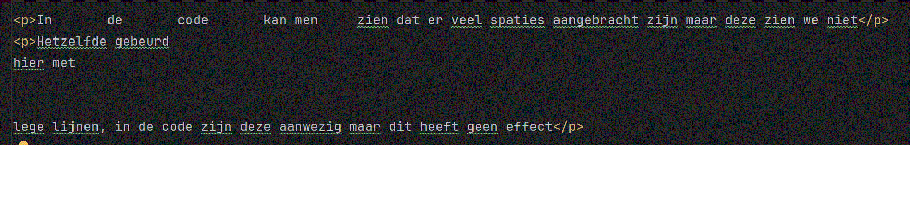

Home
Opdracht 4
Plaats in een HTML document wat extra spaties tussen 2 woorden in een paragraaf en ga na dat dit
daadwerkelijk geen invloed heeft op de pagina voorstelling in de browser.
Plaats daarna enkele lege
regels tussen 2 woorden en vergewis je ervan dat ook dit geen effect heeft op de visualisatie.
In de code kan men zien dat er veel spaties aangebracht zijn maar deze zien we niet op de pagina.
Hetzelfde gebeurd
hier met
lege lijnen, in de code zijn deze aanwezig maar dit heeft geen effect op de layout van de pagina.
